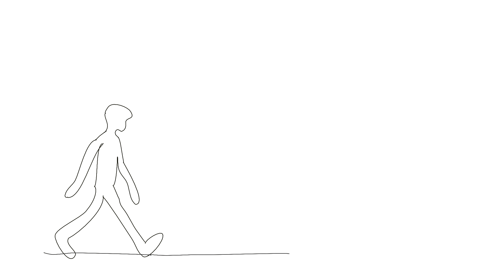
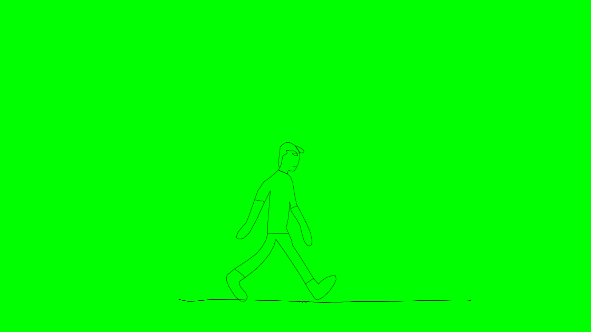
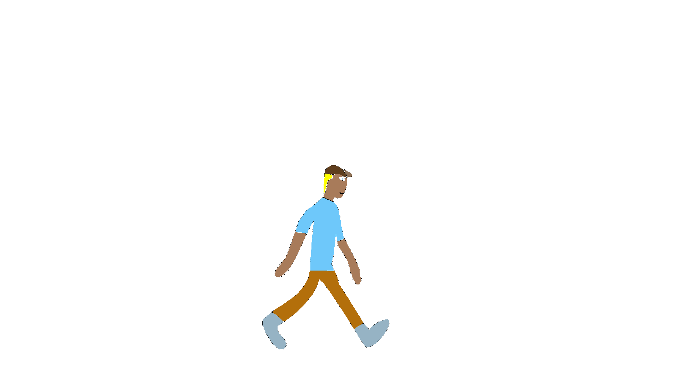
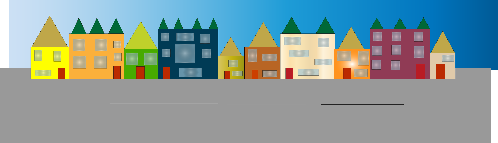
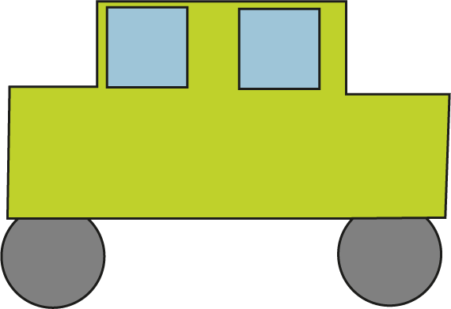

FASE 01 • BOCETO
Rough Animation (Poses Clave)
Bloqueo de timing, arco de movimiento, peso del cuerpo y sincronización de brazos y piernas frame a frame en Krita.
PORFOLIO DE
Desglose completo de producción del ciclo de caminata: desde el boceto de poses clave (Contact, Down, Passing, Up), limpieza de línea y coloreado en Krita hasta la composición final con escenario vectorial, coche y diseño sonoro en Premiere.
Comparativa de cada fase de animación antes del montaje final.

Bloqueo de timing, arco de movimiento, peso del cuerpo y sincronización de brazos y piernas frame a frame en Krita.

Trazado final limpio y consistente manteniendo el volumen del personaje en cada fotograma del ciclo.

Aplicación de colores sólidos según la guía del personaje listo para integrarse en la composición con fondo.
Elementos vectoriales creados para dar profundidad y movimiento a la escena.


Diseñado por Zakhar Oleksenko Shapoval